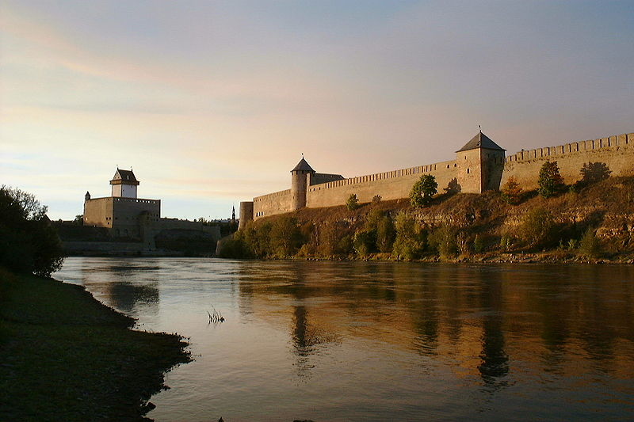
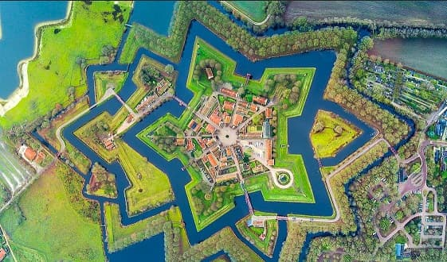

История Волосовского района — тема неподнятая, прямо скажем.
Забытое слово “Ингерманландия” снова зазвучало — как уже бывало не раз, с тем, что казалось исчезнувшим навсегда.
О границах знания
- Чтобы знать историю, нужны документы.
- Чтобы были документы — нужна письменность.
- Письменность пришла вместе с христианством.
- А значит, о дохристианском времени мы почти ничего не знаем — кроме того, что дают археологические раскопки.
Раскопки ведутся. Но кроме Старой Ладоги, в нашей области — неизвестно где и как.
Курганы, которых больше нет
Водская пятина - пятая часть Новгородской Республики. Великий Новгород - зародыш Российского государства. Младенец Киев. Зародыш Новгород.
В конце XIX века началось движение по вскрытию древних курганов. Одним из энтузиастов был Николай Константинович Рерих.
На территории Ямбургского уезда, куда входил нынешний Волосовский район, курганов было — “не продраться”.
Их вскрывали, зарисовывали, описывали. Отчёты сдавались в Академию наук.
Но:
- о выводах ничего не слышно
- о содержимом — тоже
- о принадлежности — ни слова
К какому времени? К какому народу?
Ничего
Ни-че-го
Эти курганы простояли тысячелетия. Ты-ся-че-летия.
Их тронули.
Сначала энтузиасты. Потом — трактористы.
Бесценные документы уничтожены. Других не будет.
Самодеятельная археология
Странным образом, ни кем не скомпонована историческая информация о местности, непосредственно прилегающей к центру рождения государства - Великому Новгороду.
С появлением металлоискателей вспыхнул интерес к самодеятельной археологии. Находки энтузиастов бывают удивительные. Настолько древние (находки), что не верится. Причем, в чистом поле. Есть пятна, нашпигованные артефактами, а прилегающее поле пустое. Разумеется, никем находки не осмысливаются и не систематизируются.
История наша будет переписываться в угоду очередному начальству. Как, впрочем, было всегда, современники.
История - девушка безотказная.
Почему заселение местности началось здесь?
Возникает вопрос - откуда столь древние поселения в местности, где очень мало естественных источников воды? Невозможно обживать территорию на которой для того, чтобы добраться до воды, требуется выдолбить в скале колодец в 20 метров. Почему же древние курганы здесь, а не на побережье залива, например?
Потому, что ледник, толщиной в 3 км, отступал медленно. Также медленно поднимался материк и отступала вода. Еще 4 - 8 тысяч лет назад существовало так называемое Литориновое море, накрывающее значительную часть прибрежной полосы и острова Финского залива.
Логика крепостей
Строительство древних крепостей было делом чрезвычайно трудоемким, чтобы на такое решиться - требовались веские причины. Причины могут быть только экономическими и военно-стратегическими. В древности не было более прибыльного дела, чем контроль над водными артериями. В узлах водных путей строились крепости, вокруг них возникали города. Нельзя было вести торговлю не заплатив пошлины городам, мимо которых проходили торговые артерии. И невозможно было перемещаться армиям иным способом, кроме водного.
Как пример. Для завоевания Невского края Петру I пришлось вести армию по маршруту: водным путем по Белому морю до узкого перешейка к Онежскому озеру, волоком кораблей до Онежского озера, пересечь Онежское до р.Свирь, по Свири до Ладожского озера и по Ладоге к истоку р.Невы, чтобы осадить крепость Орешек. Огромное расстояние и все по воде.
Где строили крепости
Типична установка крепости на мысу от впадения двух рек (или впадения реки в море) - и экономия на рытье крепостного вала, и контроль за двумя реками одновременно. Так выбраны места для крепостей Псков (р. Великая и р. Пскова), Старая Ладога (р. Волхов и р. Ладожка), Ниеншанц (р. Нева и р. Охта), Гдов (р. Гдовка и Чудское озеро), Выборг (Балтийское море и р. Вуокса), Корела (Ладожское озеро и р. Вуокса). Могли возводиться и не на мысу, но на реке точно: Новгород на Волхове , Нарва и Иван-город на Нарове, Ямбург на Луге. При этом есть крепости, которые сегодня стоят "в поле": Изборск, Копорье, Порхов. Зачем их там возвели?
С позиции сегодняшнего наблюдателя, только две крепости выполняют функцию перекрытия водной артерии - Невы. Это несуществующий Ниеншанц и Орешек. Нельзя пройти водой из Скандинавии в Средиземноморье не заплатив им за транзит. Остальные, в поле стоящие, неизвестно зачем построены.
Но, если представить, что уровень мирового океана выше? Хоть метра на три?
Картина меняется и наполняется смыслом.
Вуокса становится судоходна, Выборг и Корела (Приозерск) перекрывают второй водный путь "из варяг в греки" - по Вуоксе. Одна крепость со стороны Финского залива, другая с Ладожского озера.
Река Пскова становится судоходной, и через сеть рек, которые тоже наполнились, появляется водный путь до оз. Ильмень. Появляется что перекрывать крепостям Нарва, Ивангород и Псков - третий путь "из варяг в греки". (Кстати, на древних картах этот путь обозначен).
Появляется дело для Ямбурга (Кингисепп) - перекрывать полноводную Лугу. Вы видели сегодняшнюю Лугу? Это огромное русло с болотистой речушкой внизу. Отчего такое могучее русло?
Наполняются озера Изборска и через связующие протоки появляется водный выход к Балтике. Изборск древнее Пскова, кстати.
Наполняется овраг с несуществующей речкой Копорка и появляется выход в Финский залив у крепости Копорье. Причём залив подступает чуть не к крепостным стенам.
Уходят под воду Заячий остров, Петроградская сторона, весь исторический Петербург и многое, казалось бы вечное и бывшее всегда.
Взбухают речки Ижорской возвышенности, болота наполняются водой, превращаясь в озера и находится ответ на вопрос - почему здесь жили и как выживали без воды древние люди и почему курганы находятся здесь, а не на более низких местах.
Если гипотеза верна
Если предположение верно и мировой океан обмелел, то когда?
Крепость Копорье заложена 1237 году, а 1763 исключена из списка оборонительных сооружений. Значит в 13 веке строили и кровь лили, а в 18 веке забросили за ненадобностью. Но потребность в крепостях не пропала. Примерно в 1300 году заложена крепость Ландскрона - Ниеншанц, а в 1703 Петр I, завоевав ее, принимает решение снести и строить новую крепость на Заячьем острове. Та же картина. Почему же шведы не построили на Заячьем? Потому что его наводнением заливало или потому что его просто не было?
Таким образом, если предположение верно, уровень мирового океана в период c ~ 1300 по 1700 годы значительно понизился (либо континент повысился). Открылись новые земли, а старые отдалились от моря и обезводились. До этого времени поселения существовали лишь на местах, которые мы сегодня называем возвышенностью.
Справа крепость Иван-Город, слева замок Нарва. Уровень Наровы значительно ниже крепостных стен.

Ниен и Буян
Раскопки последних лет на Охтинском мысу позволили восстановить очертания стоянки времен неолита (3000 лет назад, до появления металлических орудий) и крепости Ниеншанц, основанной в 1611 году. Очень напрашивается, - крепость находилась на острове. Его формировали реки Нева, Охта и болотистая протока между ними, теперь засыпанная.

Красиво, если бы он оказался тем самым островом Буяном, на пути к царству Салтана, городу Ладоге. Как раз день-два понадобится, чтобы по течению в бочке добраться до Охтинского мыса (тогда острова) от крепости.
«А теперь нам вышел срок,
Едем прямо на восток,
Мимо острова Буяна,
В царство славного Салтана»
И путь купцов прямо на Восток, и речь славянская и тут и там, и шмелю долететь запросто, и комару. Не то, что до немецкого Рюгена, которому приписывают местоположение Буяна какие-то современные чудаки.
Красиво.
Но если не только, то это именно тут белочка щелкала изумрудные орешки, тут витязи на брег выходили чредой и царевна-лебедь по волнам скользила.
А мы хотели на этом месте поставить памятник чванству и спеси высотой до неба.
"Ах, Александр Сергеевич, милый"...